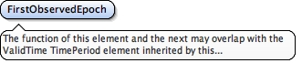

<element abstract="true" name="AbstractObservationQuality" substitutionGroup="gml:AbstractFeature" type="geo:AbstractObservationQualityType"><annotation><documentation>Abstract class to contain observation-specific environment quality. For example, GNSS node quality.</documentation></annotation></element>
<element name="GNSSObservationQuality" substitutionGroup="geo:AbstractObservationQuality" type="geo:GNSSObservationQualityType"><annotation><documentation>Abstract class to contain observation-specific environment quality. For example, GNSS node quality.</documentation></annotation></element>
The function of this element and the next may overlap with the ValidTime TimePeriod element inherited by this complexType from AbstractTimeSliceType.
Diagram

Type
TimePositionType
Properties
content
simple
Source
<element name="FirstObservedEpoch" type="gml:TimePositionType"><annotation><documentation>The function of this element and the next may overlap with the ValidTime TimePeriod element inherited by this complexType from AbstractTimeSliceType.</documentation></annotation></element>
A geo:AbstractTimeSliceType extension to contain the value object for a setup instance. The date of setup is defined as the gml:validTime element inherited from geo:AbstractTimeSliceType.
<complexType name="SetupInstanceType"><annotation><documentation>A geo:AbstractTimeSliceType extension to contain the value object for a setup instance. The date of setup is defined as the gml:validTime element inherited from geo:AbstractTimeSliceType.</documentation></annotation><complexContent><extension base="geo:AbstractTimeSliceType"><sequence><element minOccurs="0" name="fromProject" type="geo:ProjectPropertyType"/><element minOccurs="0" name="setupHeight" type="geo:ValueType"/><element minOccurs="0" name="observedBy" type="gmd:CI_ResponsibleParty_PropertyType"/><element maxOccurs="unbounded" minOccurs="0" name="usesInstrument" type="geo:InstrumentPropertyType"/><element maxOccurs="unbounded" minOccurs="0" name="usesSensor" type="geo:SensorPropertyType"/><group ref="geo:RemarksGroup"/></sequence></extension></complexContent></complexType>
<complexType name="GNSSObservationQualityInstanceType"><annotation><documentation>A set of Site quality metrics computed daily to evaluate a Site's fitness or level of suitability in downstream GNSS analysis.</documentation></annotation><complexContent><extension base="geo:AbstractTimeSliceType"><sequence><element name="FirstObservedEpoch" type="gml:TimePositionType"><annotation><documentation>The function of this element and the next may overlap with the ValidTime TimePeriod element inherited by this complexType from AbstractTimeSliceType.</documentation></annotation></element><element name="LastObservedEpoch" type="gml:TimePositionType"/><element name="PossibleEpochs" type="integer"/><element name="ObservedEpochs" type="integer"/><element name="EpochPercent" type="double"/><element name="averageMultipathL1" type="geo:ValueType"/><element name="AverageMutlipathL2" type="geo:ValueType"/><element name="PossibleObservations" type="integer"/><element name="CompleteObservations" type="integer"/><element name="DeletedObservations" type="integer"/><element name="MaskedObservations" type="integer"/><element name="ObservationRate" type="geo:ValueType"/><element name="ObservationSlipRatio" type="geo:ValueType"/><element name="ObservationsMissingL1" type="integer"/><element name="ObservationsMissingL2" type="integer"/><element name="ObservationsMissingP1orC1" type="integer"/><element name="ObservatinosMissingP2orC2" type="integer"/><element name="ReceiverTrackingCapability" type="integer"/><element name="TotalSatellites" type="integer"/><element name="MeanS1" type="geo:ValueType"/><element name="Means1" type="geo:ValueType"/><element minOccurs="0" name="source" type="geo:ObservationQualitySourcePropertyType"/><group ref="geo:RemarksGroup"/></sequence></extension></complexContent></complexType>